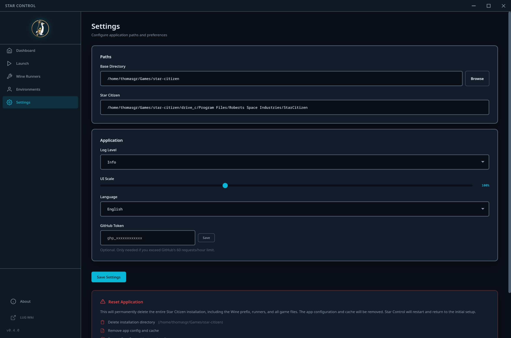

Settings
Configure application paths, appearance, and manage your GitHub API token.

Paths
- Base Directory - The root directory where Star Citizen is installed. Use the browse button to select it. Star Control validates the path for existence, write permissions, and available disk space.
- Star Citizen Path - Automatically derived from the base directory. This read-only field shows where the game files are located within the Wine prefix.
Application
Log Level
Controls the verbosity of Star Control's log output:
- Debug - Most verbose, includes detailed diagnostic information
- Info - Standard logging (default)
- Warn - Only warnings and errors
- Error - Only errors
UI Scale
Adjust the application's interface scaling from 50% to 200%. The slider shows the current percentage in real-time. This is especially useful for high-DPI displays or if you prefer larger text and controls.
Language
Switch Star Control's interface language:
- Auto-detect - Uses your system language (English or German)
- English
- German
The language switches immediately without requiring a restart.
GitHub Token
An optional GitHub personal access token increases the API rate limit from 60 to 5,000 requests per hour. This is useful when frequently browsing available Wine runners or checking for updates.
- When no token is set, a password input field with a Save button is shown
- When a token is set, it displays obfuscated (first 4 and last 4 characters visible) with Edit and Delete buttons
Danger Zone: Reset App
The reset function at the bottom removes all Star Control configuration and installation data. Before executing, a checklist shows what will be deleted:
- Installation directory (with the full path displayed)
- Configuration files
- Application requires a restart after reset
- Your GitHub token is preserved (not deleted)
A confirmation dialog ensures you don't accidentally reset. The application restarts automatically after the reset completes.